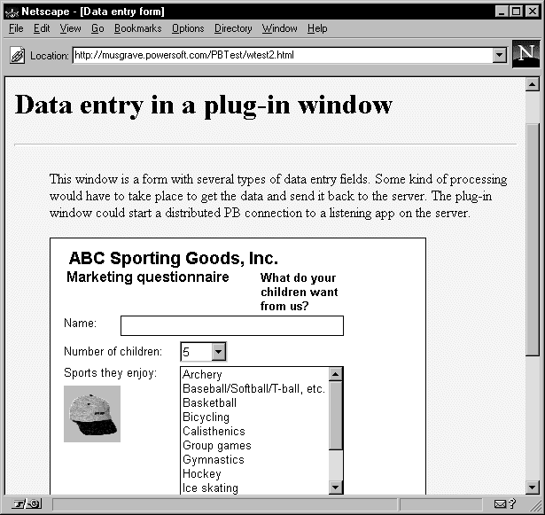

The PowerBuilder window plug-in lets you display a PowerBuilder child window on a Web page viewed in a browser that supports Netscape plug-ins.
 Internet Explorer Microsoft Internet Explorer 5.5 Service Pack 2 and later versions
do not support Netscape plug-ins. As a result, the PowerBuilder
window plug-in cannot be used to display PSR reports on those browsers.
Internet Explorer Microsoft Internet Explorer 5.5 Service Pack 2 and later versions
do not support Netscape plug-ins. As a result, the PowerBuilder
window plug-in cannot be used to display PSR reports on those browsers.

The PowerBuilder child window can include all the familiar controls, including DataWindows, OLE objects, ActiveX (OCX) controls, and tree controls. You can also open other (pop-up or response) windows from the child window.
As the user interacts with controls in the child and other windows, scripts for the controls' events are executed just as they are in standalone PowerBuilder applications. Database access by the plug-in application occurs locally using the client's defined database connections.
The objects in the application can be contained in one or more PowerBuilder Dynamic Libraries (PBDs).
There are two versions of the PowerBuilder window plug-in: standard and secure.
Standard PowerBuilder window plug-in The standard PowerBuilder window plug-in displays a PowerBuilder child window in an HTML page. The standard window plug-in is implemented by NPPBA105.DLL.
Secure PowerBuilder window plug-in The secure PowerBuilder window plug-in is a secure version of the standard window plug-in. Using the secure version ensures that PowerBuilder applications downloaded over the Internet do not damage a client system or access information on a client workstation. The secure window plug-in is implemented by NPPBS105.DLL.
For considerations to keep in mind when using the secure version of the PowerBuilder window plug-in, see "Using the secure PowerBuilder window plug-in".
The PowerBuilder window plug-in requires use of a browser that supports Netscape plug-ins, such as Netscape Navigator Version 3.x or later. Microsoft Internet Explorer 5.5 Service Pack 2 and later versions do not support Netscape plug-ins.
The standard PowerBuilder window plug-in is a nonsecure application, meaning that it can access local files and run local applications. These types of processing are often undesirable in an uncontrolled Web environment but might be perfectly acceptable on a corporate intranet where access is controlled.
If security is important at your site, consider using the secure version of the PowerBuilder window plug-in to build your application.
 Some events always execute in secure mode As of PowerBuilder 7, the application Open event and some
of the Constructor events for controls execute in secure mode even
when you use the standard window plug-in. If your application logic
depends on the ability to perform a nonsecure activity in these
events, such as opening a file for writing, post an event message
to yourself. These are processed once the plug-in returns to standard
mode.
Some events always execute in secure mode As of PowerBuilder 7, the application Open event and some
of the Constructor events for controls execute in secure mode even
when you use the standard window plug-in. If your application logic
depends on the ability to perform a nonsecure activity in these
events, such as opening a file for writing, post an event message
to yourself. These are processed once the plug-in returns to standard
mode.
For more about the secure PowerBuilder window plug-in, see "Using the secure PowerBuilder window plug-in".
HTML forms provide some user interaction by means of a limited user interface. The PowerBuilder window plug-in takes you beyond HTML. You can present a fully developed application window with a rich user interface design to a Web page. You can access data sources defined on the client workstation.
The PowerBuilder window plug-in displays a PowerBuilder child window inside a fixed space reserved on the Web page. The user can interact with the controls on the page, and the PowerBuilder scripts for the window and its controls can execute any PowerBuilder code. When the user switches to another Web page, the PowerBuilder window is closed and the PowerBuilder DLLs are unloaded from memory.
You include the plug-in on an HTML page using the HTML Embed element. The Embed element names one or more PBDs that contain PowerBuilder objects and the name of the child window object that is displayed on the page.
The PowerBuilder window plug-in implements the Netscape plug-in API and requires a browser that supports this API (for information, see "Supported browsers".)
Table 33-1 describes in detail what happens between the client and server when the user views an HTML document with a PowerBuilder window plug-in:
The PowerBuilder window plug-in uses the PowerBuilder runtime DLLs as well as the plug-in DLL to provide a full range of PowerBuilder functionality.
Each client that will browse pages containing PowerBuilder window plug-ins needs supporting software installed on the local machine:
The PowerBuilder window plug-in is especially useful in an intranet application where you have control over the setup of client machines.
For details about setting up client machines on each supported platform, see "Setting up users' workstations".
The name of the PowerBuilder window plug-in DLL depends on whether you are using the standard or secure version:
| Component | Name |
|---|---|
| Standard PowerBuilder window plug-in | NPPBA105.DLL |
| Secure PowerBuilder window plug-in | NPPBS105.DLL |